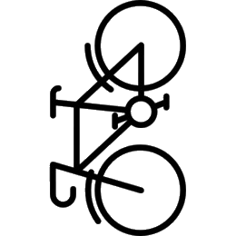

"We receive overwhelmingly positive feedback on the vertical racks"
-ASU Parking Services
WRONG!

As the data shown in the pie chart, horizontal racks are preferred over verticals.
Total count of bike racks used
Average Bike Racks Used Across Different Locations
When collecting data for Armstrong Hall, we were pretty shocked to notice how little to no one uses the vertical bike racks at all! Click play below to see stats for different times!
This stacked bar chart illustrates the total number of distribution of bike racks across different locations, categorized by the type of racks - horizontal, vertical, and vertical racks parked incorrectly